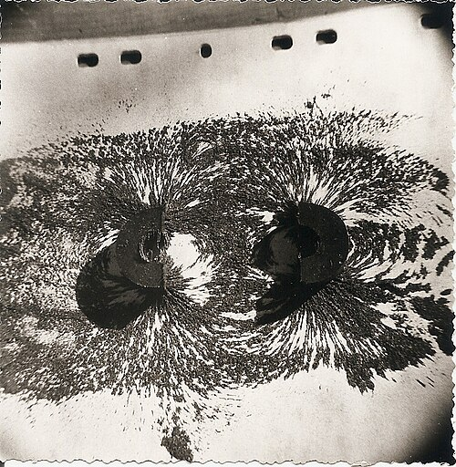
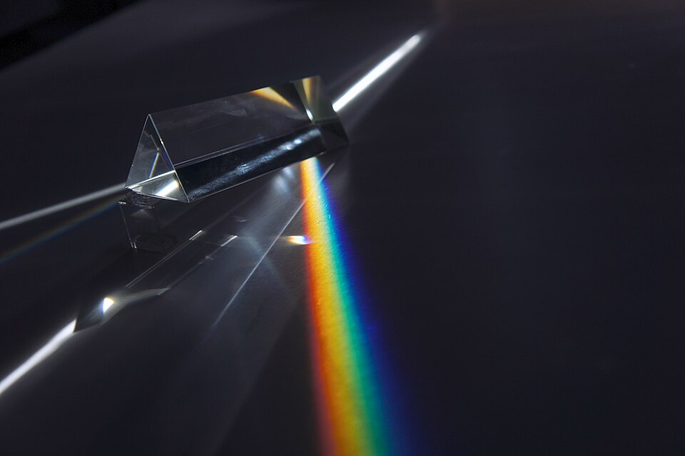
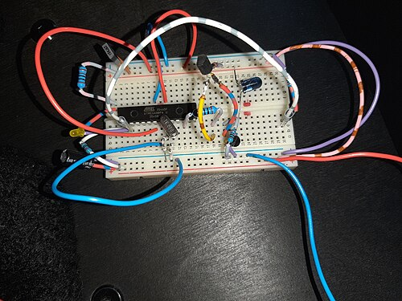

Folha 01Museu de ciência para mexer, dos 6 aos 12 anos, Coimbra
Toca. Testa. Descobre.
Quarenta experiências para fazer com as próprias mãos. Nada atrás de vidro, e cada peça explica porque funciona.
- Ter a dom, a partir das 10:00
- Rua da Sofia 59, Coimbra
Experiências
Cada peça tem um número e uma legenda na parede: o que fazer, o que observar e a ideia por trás. Três das quarenta, tal como estão na sala.
-
N.º 07Sala 2, Magnetismo

O campo que não se vê
Espalha a limalha sobre o íman e o campo invisível desenha-se sozinho. Vira um dos ímanes e vê as linhas afastarem-se.
- Idade
- 6+
- Tempo
- 5 min
-
N.º 12Sala 3, Luz

O branco são todas as cores
Aponta o feixe ao prisma. Cada cor desvia-se de forma diferente, e a luz branca abre-se num espectro em cima da mesa.
- Idade
- 6+
- Tempo
- 8 min
-
N.º 21Sala 4, Eletricidade

Fecha o circuito
Pilha, fio, interruptor, lâmpada. Monta o percurso na bancada e a luz só acende quando o caminho está fechado.
- Idade
- 8+
- Tempo
- 12 min
Como é a visita
Cerca de duas horas e meia da porta à oficina. A ordem é a mesma todos os dias.
-
1
Pulseira na receção
Mostra o bilhete no telemóvel e cada visitante recebe uma pulseira. Casacos e mochilas ficam nos cacifos.
10 min
-
2
Quatro salas, por qualquer ordem
Magnetismo, luz, som e eletricidade. Tudo se pode tocar, e há um monitor de bata amarela em cada sala.
≈ 90 min
-
3
Demonstração ao vivo
Vinte minutos no salão: o pêndulo gigante, uma nuvem numa garrafa, uma faísca que se ouve.
11:30, 15:00, 16:30
-
4
Oficina para levar
Cada criança monta uma bússola ou um pião e leva-o para casa com a folha da experiência.
30 min
Preços
- Criançados 6 aos 12 anos6 €
- Adultoa partir dos 139 €
- Família 2+2dois adultos, duas crianças26 €
Horário
| Terça a sexta | 10:00–18:00 |
|---|---|
| Fins de semana e feriados | 10:00–19:00 |
| Segunda | Encerrado |
Última entrada uma hora antes de fechar. Crianças até aos 12 anos entram com um adulto.
Rua da Sofia 59, 3000-389 Coimbra
A 5 min a pé da estação Coimbra-A
Para escolas
Visitas de turma nas manhãs de dias úteis, com um guião do professor por ano de escolaridade, alinhado com as Aprendizagens Essenciais do 1.º e 2.º ciclo.
- Por aluno4 €
- Professores e acompanhantesgrátis
- Tamanho do grupo12–28